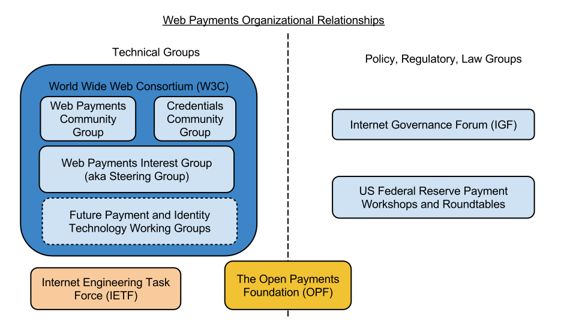

This roadmap document outlines the proposed technology stack and development
timeline for the set of technologies being worked on by the Web Payments
Community Group.
Introduction
This document outlines the technology stack and development timeline for the
set of technologies being worked on by the Web Payments Community Group. It
is intended for those people that want to understand all of the technical
pieces being proposed, how they fit together, and the development timeline
for each technology.
Readers should understand that this roadmap document is a work in progress
and while many of the technologies discussed in this document have been
implemented and are in production, others may be changed or modified heavily
if driven through a standardization track at W3C. This document is a proposed
roadmap, not the final roadmap for version 1.0.
Technology Stack
The Web Payments technology stack is designed on generally accepted design
principles outlined for the Architecture of the World Wide Web[[WEBARCH]]. It
also heavily re-uses W3C and IETF technology, such as JSON-LD [[JSON-LD-SYNTAX]]
and HTTP [[RFC7230]]. A brief overview of the technology stack is shown below
for reference:

Timeline
The technologies proposed by the group are layered in such a way to allow the
base technologies to be re-used by other Web-based standards. Thus, there is
a natural order of progression in developing these technologies, from low-level
to high-level:

Organization Ecosystem
The following organizations are expected to be directly involved in the
creation of the technologies outlined in this roadmap:
